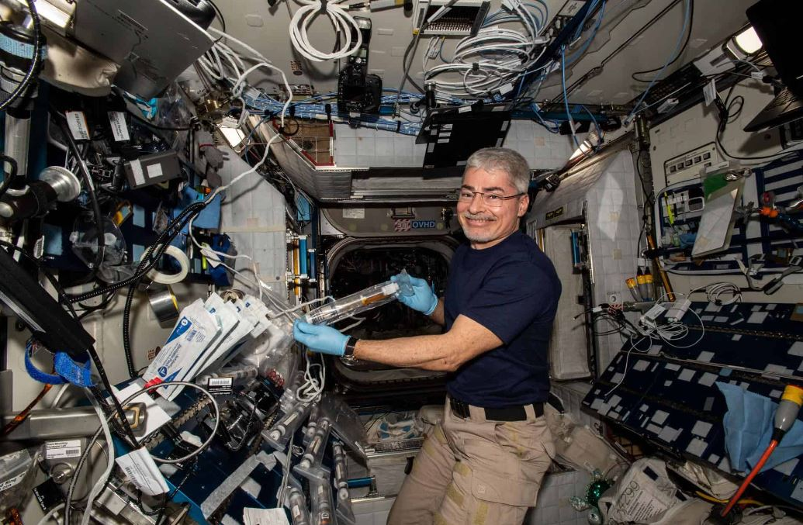

Alguns estudos sugerem que as condições do espaço afetam significativamente a saúde dos seres humanos — não é à toa que esse ainda continua sendo o maior problema para o planejamento de missões tripuladas à Marte. De acordo com um estudo recente publicado na revista científica Scientific Reports, a gravidade zero pode afetar significativamente o cérebro humano durante as viagens espaciais.
Pesquisadores da Universidade da Flórida utilizaram dados de 30 astronautas e descobriram que, entre aqueles que realizaram missões com mais de seis meses, os ventrículos cerebrais se expandiram. O pico de crescimento foi de até seis meses, após esse período, eles não perceberam mudanças significativas.
O que são os ventrículos do cérebro?
Os ventrículos são cavidades do cérebro, responsáveis por fornecer nutrição, proteção e remoção de resíduos. Acontece que os fluidos do cérebro são distribuídos uniformemente, contudo,
a gravidade zero faz com que esse fluido se desloque. O resultado é a expansão dos ventrículos.

De acordo com a professora de fisiologia aplicada e cinesiologia da Universidade da Flórida, Rachael Seidler, a permanência prolongada no espaço pode fazer com que os seus ventrículos cerebrais se tornem maiores.
Ela disse que leva cerca de três anos para os ventrículos se recuperarem totalmente e voltarem ao normal.
“O maior salto ocorre quando você passa de duas semanas a seis meses no espaço. Não há mudança mensurável no volume dos ventrículos depois de [o astronauta permanecer no espaço por] apenas duas semanas”, disse Seidler.
Gravidade zero e o cérebro
Conforme a estudo explica, os pesquisadores analisaram dados de astronautas que fizeram missões durante duas semanas, seis meses e por um ano inteiro. Entre os 30 indivíduos que participaram da pesquisa, 8 fizeram missões mais curtas, 18 permaneceram por até seis meses e 4 fizeram missões por um ano.
O estudo descreve que
ainda não existem explicações definitivas sobre as consequências da expansão ventricular no ser humano, contudo, os cientistas acreditam que é prudente manter a fisiologia do cérebro como ela realmente é. De qualquer forma, eles continuarão estudando o tema, pois missões espaciais tripuladas de longa duração já estão sendo planejadas por diferentes agências espaciais.
“Ficamos felizes em ver que as mudanças não aumentam exponencialmente, considerando que eventualmente teremos pessoas no espaço por períodos mais longos. Ainda não sabemos ao certo quais são as consequências disso a longo prazo na saúde e no comportamento dos viajantes espaciais, portanto, permitir que o cérebro se recupere parece uma boa ideia”, disse Seidler.